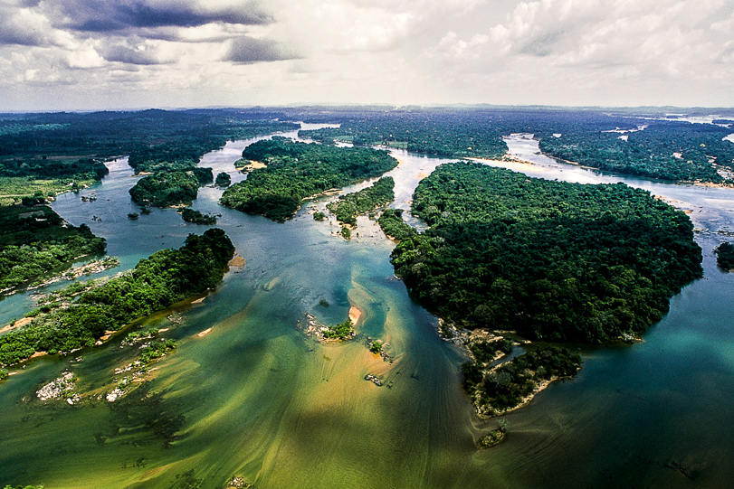

O VALOR INESTIMÁVEL das Etnias do Xingu

Ao longo desta jornada de conhecimento, fica evidente que o Parque Indígena do Xingu é um mosaico de culturas, abrigando mais de 16 etnias com línguas, rituais e sistemas sociais distintos. Esta diversidade não é apenas uma curiosidade, mas sim a base de um complexo sistema multiétnico que funciona em **harmonia e cooperação**.
A importância dessas etnias para o Brasil e o mundo é imensurável. Eles são os guardiões originais de um dos biomas mais vitais do planeta, o que lhes confere um papel fundamental na luta contra a crise climática. Seus conhecimentos ancestrais sobre manejo da floresta, agricultura sustentável e o uso de plantas medicinais representam um patrimônio científico e cultural que deve ser preservado e respeitado por toda a humanidade.
Defender os povos do Xingu é defender o **futuro da floresta**, a manutenção da biodiversidade e a própria identidade brasileira. Eles nos ensinam que a vida em sociedade pode ser pautada pelo respeito profundo à natureza e que a resistência cultural é a chave para a sobrevivência em um mundo em constante transformação.
UMA MENSAGEM DE FÉ E ESPERANÇA
Este site, criado sob a perspectiva de uma cristã arminiana, reconhece a beleza e a dignidade inegável de cada povo, de cada etnia, refletindo o amor de um Deus Criador.
A Luz da Palavra: Responsabilidade e Amor
A Bíblia nos ensina sobre a **Criação Divina** (Gênesis 1), onde toda vida é valiosa. Ela nos conclama a amar o próximo como a nós mesmos (Mateus 22:39) e a sermos **bons mordomos da Criação** (Gênesis 2:15).
Portanto, nossa fé nos impulsiona a uma ação concreta: a de lutar por justiça, por respeito aos direitos dos povos indígenas e pela preservação da natureza que Ele nos confiou. Onde há luta por dignidade e vida, ali está o chamado de Deus ao nosso coração.